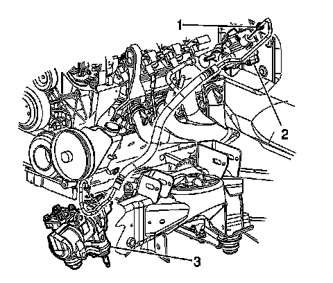

Power Steering Gear Inlet Pipe/Hose Replacement (With Hydroboost)
Power Steering Gear Inlet Pipe/Hose Replacement (With Hydroboost)
Removal Procedure

Notice: Refer to Power Steering Hose Disconnected Notice.
1. Install a drain pan under the vehicle.
2. Remove the power steering gear inlet hose (1) from the brake booster.
3. Remove the power steering gear inlet hose from the power steering gear.
4. Remove the power steering gear inlet hose from the vehicle.
Installation Procedure
Notice: Refer to Installing Hoses Without Twists or Bends Notice.
1. Route the hose in the same position the hose occupied prior to removal.
2. Install the power steering gear inlet hose (1) to the brake booster (2). Hand tighten only.
Notice: Refer to Fastener Notice.
3. Install the power steering gear inlet hose to the power steering gear.
Tighten both power steering gear inlet hose fittings to 32 N.m (24 lb ft).
4. Remove the drain pan from under the vehicle.
5. Bleed the power steering system. Refer to Power Steering System Bleeding.